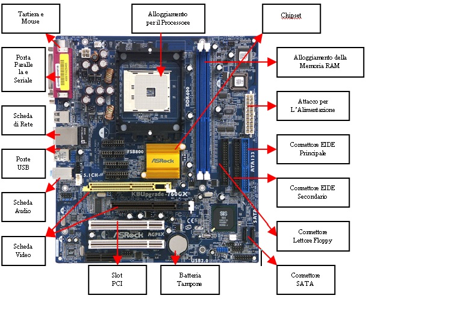

LA SCHEDA MADRE
DESCRIZIONE DEL COMPONENTE HW
La scheda madre, o schema di sistema, spesso conosciuta come Motherboard è una parte fondamentale di un PC
moderno poichè racchiude tutti i circuiti elettronici e i collegamenti di interfaccia tra i componenti del PC
comprendendo quindi anche i bus di espansione e le interfacce verso i collegamenti esterni.
E' quindi responsabile della maggior parte di segnali e deve assicurarsi della regolarità di essi.
E' composta da un circuito stampato molto complesso, insieme di diversi strati di vetronite e rame, tra questi strati
ci sono le piste che collegano i componenti.
Su questo circuito stampato vengono successivamente saldati una serie di circuiti integrati, tra questi il più
importante è sicuramente il chipset, che svolge la maggior parte del lavoro di interfaccia tra i componenti principali
e i bus di espansione, la ROM, il socket per processore e connettori.

Questa struttura è stata ideata dopo varie schede madri meno efficenti nel corso della storia tecnologica.
Attualmente si è giunti ad una standardizzazione di due tipi di strutture di schede madri:
ATX e BTX entrambe diffuse da Intel, casa produttrice di esse, sono differenti nel layout, la prima sviluppata
per poter assemblare facilmente un pc con componenti differenti nella marca ma compatibili, la seconda per
sopperire al problema del calore prodotto dalla CPU e dalla Scheda video. Per esempio la BTX viene montata
sulla parete sinistra del case anzichè su quella di destra, e vi è una sistemazione differente dei banchi di ram
che nella disposizione ATX ostacolavano il flusso d'aria e quindi contribuivano ad un maggior surriscaldamento.
In conclusione si può osservare che ogni Scheda Madre segue il modello rappresentato nel disegno (vedi sopra) e
vi sono diversi layout in base al computer finale che stiamo assemblando.